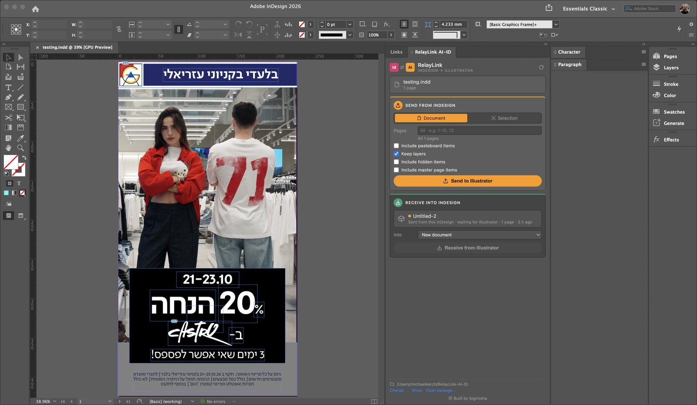
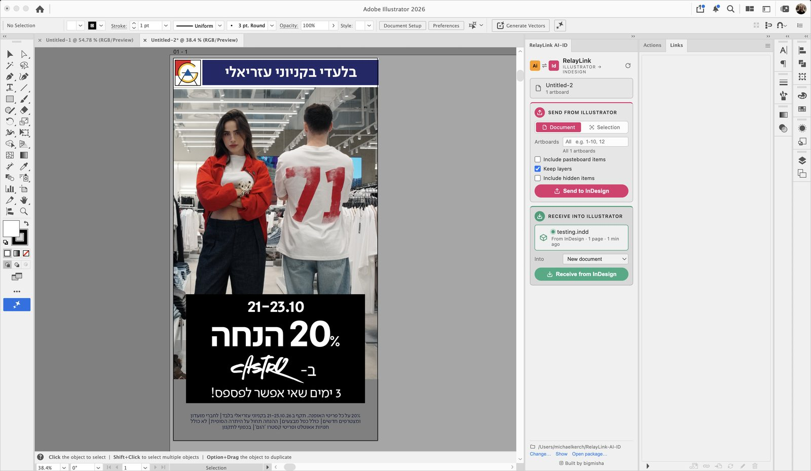
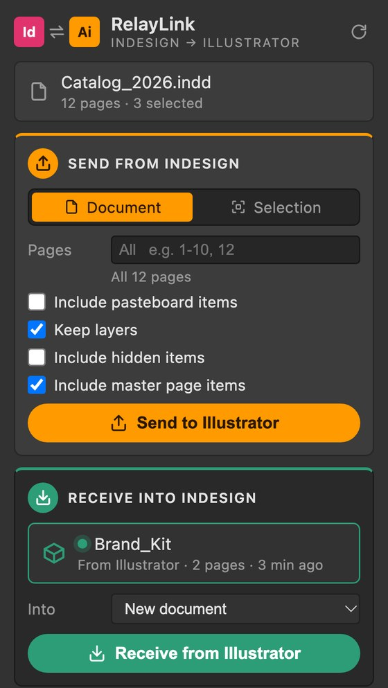
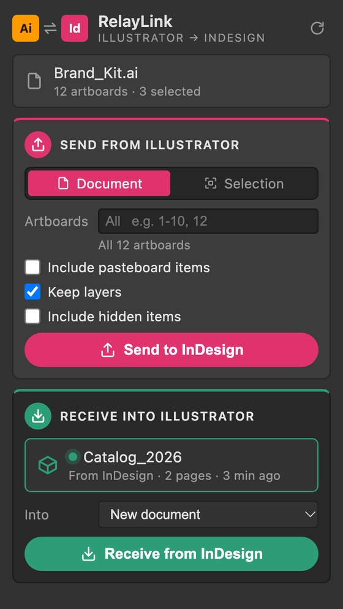

רק העמודים שצריך
כותבים טווחים ורשימות, כמו בחלון ההדפסה. 5- פירושו מעמוד 5 ועד הסוף. שדה ריק שולח הכול.
לוחצים Send בתוכנה אחת ו-Receive בשנייה. עמודים הופכים לארטבורדים, שכבות נשארות שכבות, עברית נשארת מימין לשמאל, והתמונות נשארות מקושרות לאותם קבצים בדיוק.
בתוכנה שבה נמצא העיצוב בוחרים מסמך שלם או רק את מה שמסומן, ולוחצים Send. הכפתור צבוע בצבע של התוכנה שאליה הפרויקט הולך.

בתוכנה השנייה החבילה מופיעה עם נקודה ירוקה. לוחצים Receive ומקבלים מסמך חדש, או מכניסים אותה למסמך הפתוח.

ההעברה עוברת דרך תיקייה (ברירת המחדל: ~/RelayLink-AI-ID). אפשר לבחור תיקייה אחרת בפאנל, או לפתוח כל חבילה עם Open package…
שלוש אפשרויות חדשות בכרטיס השליחה, ופאנל בעיצוב חדש שבו רואים מיד מה שולח ומה מקבל. אפשר לנסות אותן כאן.
כותבים טווחים ורשימות, כמו בחלון ההדפסה. 5- פירושו מעמוד 5 ועד הסוף. שדה ריק שולח הכול.
אובייקטים שזרוקים מסביב לעמוד לא נשלחים. כל מה שנוגע בעמוד, אפילו בקצה, תמיד עובר איתו.
התוכנה השנייה בונה את אותן שכבות: שמות, סדר, הסתרה ונעילה. מכבים את האפשרות והכול מגיע בשכבה אחת, באותו סדר.


פותחים את RelayLink-AI-ID_InDesign.zxp ואת RelayLink-AI-ID_Illustrator.zxp עם ZXP Installer.
סוגרים ופותחים את InDesign ואת Illustrator כדי שיטענו את הפאנל.
Window ▸ Extensions ▸ RelayLink AI-ID, בשתי התוכנות. ואז Send.